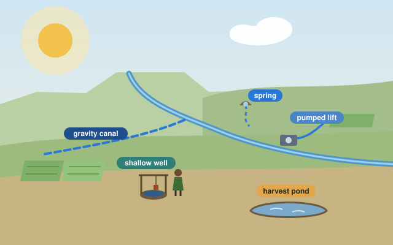
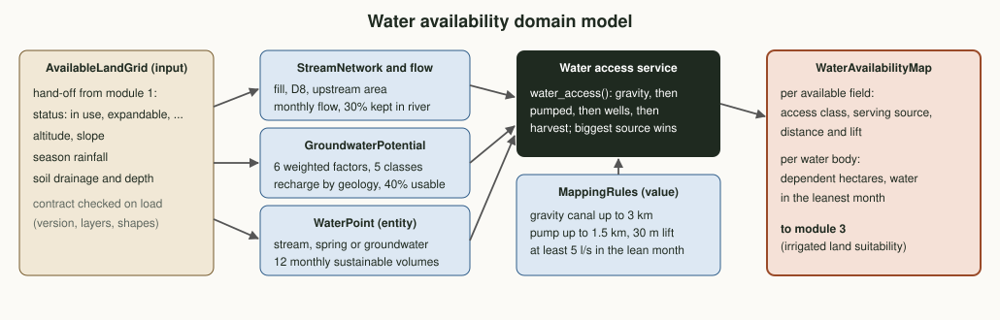
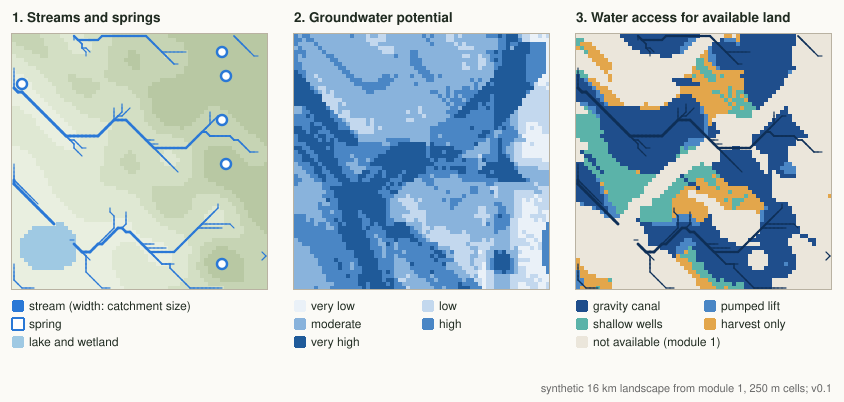

Plan · Phase 1 · Module 2Water availability mapping
Module 1 found the land that may be farmed. This module maps where water can come from for that land: the streams and what they can give each month, the groundwater, the springs, and for every available field the cheapest way to reach water.
Where this sits in Phase 1
Each module reads the previous module's output. This one starts from module 1's hand-off file: the available land and the terrain, on the same grid. Its own output, the water availability map, is what module 3 combines with the land to judge irrigated suitability.
Why map the water, not only budget it
Analogy: the size of the household's water tank versus a map of the taps and wells. The stage 02 budget tells a cluster how much water it has each month. It cannot say which field can reach which source, or whether a source that reaches a field has enough water for it. A map answers both.
Reachable is not enough
In the demo, 84% of the available land can reach some source, but in February there is water for irrigated wheat on only 22% of that land.
Cheapest way first
A gravity canal costs far less to run than a pump, and a pump less than a borehole. Each field gets the cheapest option that works.
Rivers keep their share
30% of every stream's flow stays in the river, and only 40% of groundwater recharge may be pumped, the same rules as the stage 02 budget.
Domain model
Three kinds of source are mapped from the terrain and the land data, each as WaterPoints with twelve monthly sustainable volumes. A water access service then gives every available field an access class and a serving source.

| Term | Kind | Meaning |
|---|---|---|
| AvailableLandGrid | Input | Module 1's hand-off: available land, terrain, rainfall and soil drainage on one grid, checked against its contract when loaded. |
| StreamNetwork | Value | Cells that collect at least 2 km² of upstream area, traced downhill from the terrain. |
| GroundwaterPotential | Value | A 0 to 1 index from six weighted factors, in five classes from very low to very high. |
| WaterPoint | Entity | A stream reach, spring or shallow-groundwater site, with twelve monthly sustainable volumes and a confidence level. |
| AccessClass | Enum | gravity pumped shallow wells harvest only |
| WaterAvailabilityMap | Output | Per field: access class, source, distance and lift. Per source: dependent hectares and water in the leanest month. |
Methods
Streams and their flow
The terrain is filled so every cell drains, each cell sends its water to the steepest downhill neighbour (D8), and upstream area is added up. Monthly flow = upstream area × specific runoff, high in Kiremt and low in Bega. 70% of it is usable; a reach counts as a source if it still gives 5 l/s in the leanest month.
Groundwater potential
A weighted overlay of six factors scored 0 to 1: geology 30% (alluvium high, fractured basalt moderate, massive basalt low), fractures 20%, slope 15%, rainfall 15%, stream density 10% and soil drainage 10%. Recharge = season rainfall × a coefficient by geology; 40% of it may be pumped.
Springs
Candidate spring sites are gentle cells at the foot of steep ground with moderate or better groundwater potential. Yields of 2 to 8 l/s fall to about half in the dry months; 30% is left for drinking water.
Water access
For every available field, in order of cost: a gravity canal from a higher source within 3 km (losing 2 m per km plus 2 m freeboard), a pump within 1.5 km and 30 m of lift, shallow wells where groundwater potential is high, otherwise rainwater harvesting. Among reachable sources, the one with most water in its leanest month wins.
Amhara-specific considerations
Blue Nile headwaters
Much of Amhara drains to Lake Tana and the Abay (Blue Nile). Highland streams flood in Kiremt and shrink to a trickle by March, so the dry months decide what irrigation is possible.
Springs and hand-dug wells
Springs at the foot of escarpments and hand-dug wells on valley floors already water many homesteads and small plots; mapping them protects drinking water first.
Small-scale schemes
River diversions and small dams are common. Their command areas and water-user associations are key inputs before any new source is promised.
Volcanic geology
Fractured and weathered basalts store water along fractures; massive trap basalt stores little; valley alluvium stores most. Geology is the strongest groundwater factor here.
Downstream users
Every diversion takes water someone downstream relies on. Environmental flow and downstream rights are kept in the rules, not left to negotiation later.
Rainwater harvesting
Ponds and tanks are the fallback where no other source reaches; they suit supplementary irrigation of small, high-value plots more than whole fields.
Data sources
| Layer | Source | Resolution | Used for | Access |
|---|---|---|---|---|
| Available land and terrain | Module 1 hand-off (stage 01) | grid | Which fields to assess; elevation and slope | Project |
| Streams and catchments | Copernicus DEM GLO-30; HydroSHEDS / HydroRIVERS | 30 to 90 m | Stream network, upstream area | Open |
| River flow | Gauging stations (national water ministry); regional flow studies | stations | Monthly specific runoff, calibration | By agreement |
| Rainfall | CHIRPS v2 | ~5 km | Runoff and recharge | Open |
| Geology and fractures | Geological survey maps; lineaments from the DEM and Landsat | map scale | Groundwater potential factors | Open / by agreement |
| Wells, boreholes, springs | Woreda water office inventories; field survey | points | Validation, yields | By agreement |
| Existing schemes | Regional irrigation office; water-user associations | polygons | Command areas already in use | By agreement |
Demo on module 1's landscape
The same made-up 16 km landscape as module 1, read from its hand-off file. Streams, groundwater and springs are derived here; the irrigated-wheat demand comes from the stage 02 budget (2,714 m³ per hectare in February, 8,340 m³ over the season). No real water data.

How the available land reaches water
14,256 ha of available land from module 1, by access class.
Reachable is not the same as enough
Land a source reaches, and land it has water for in February (irrigated wheat).
Try it: can this field get water?
Describe one field and its nearest stream. The same order and rules as water_access() give the access class, and the stream's dry-season flow shows how many hectares it can water.
Indicative rules: gravity canal up to 3 km losing 2 m per km plus 2 m freeboard; pump up to 1.5 km and 30 m lift; wells where potential is high. Wheat demand 2,714 m³ per hectare in February.
Output: what module 3 receives
For every available field: how it can reach water and from which source. For every source: how much land depends on it and how much water it has in its leanest month. Module 3 adds the irrigation land factors to this.
{
"field": {"cell": [47, 31], "access": "GRAVITY", "source": "ST-53-41",
"distance_km": 2.92, "lift_m": -40.0},
"source": {"id": "ST-53-41", "kind": "stream", "confidence": "indicative",
"sustainable_m3": [62475, 46856, 40609, 46856, 78094, 187425,
859031, 1249500, 937125, 546656, 234281, 124950],
"dependent_ha": 306.2, "water_for_wheat_ha_in_feb": 17.3},
"rules_version": "0.1",
"from_module_1": {"branch": "stage/01-land-intelligence", "commit": "c75805e"}
}A real record from the demo (example_record in assets/demo-water-availability.json): the field sits 40 m below a stream 2.9 km away, so a gravity canal can reach it, but in February that stream has water for 17 of the 306 hectares that depend on it.
What comes next
Validate
Check the stream network and spring sites against the woreda water office's inventory and a field walk; calibrate runoff with any gauged stream.
Real layers
Replace the synthetic terrain, geology and runoff with the DEM, the geological map and regional flow records for the pilot woreda.
Module 3
Irrigated land suitability: which available land with water access can be irrigated well, by surface, sprinkler or drip.
Code on this branch
src/water_res/handoff.py reads and checks module 1's hand-off file
src/water_res/mapping.py streams, flow, groundwater potential, water points, access
src/demo_water_map.py synthetic demo on module 1's landscape (maps, hectares, JSON)
data/handoff-module1.json module 1's output, with the commit it came from
tests/test_mapping.py unit tests for every rulegit switch stage/02-water-resources
python3 src/demo_water_map.py
python3 tests/test_mapping.py